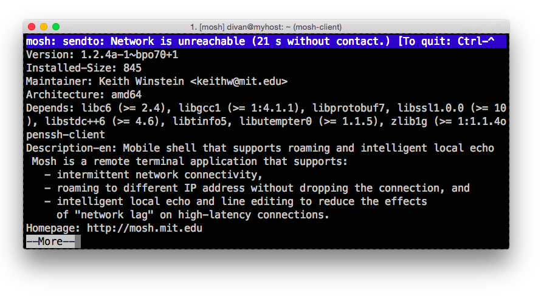

На Хабре пару лет назад уже упоминали Mosh, но, кажется, есть смысл напомнить хабражителям об этой великолепной программе, которая, вполне возможно, станет для кого-то одним из самых приятных открытий и облегчит жизнь.
Забегая наперед, сразу спойлер — для mosh: не нужны права суперпользователя, он не является демоном, и не занимается аутентификацией и шифрованием (это остается на плечах ssh). Разработали его в MIT, активно развивают, и поддерживают для всех платформ и дистрибутивов.

Чем же mosh лучше традиционного ssh-client, какие проблемы решает и почему вы, скорее всего, на него перейдете?
Основные задачи, которые решает mosh:
Mosh-сессия выглядит следующим образом
Как правило, remote-shell протоколы исповедуют подход «сервер отправляет все данные клиенту, а клиент уже разбирается, как их отображать». Mosh идет другим путем и хранит состояние экрана на клиенте и сервере, и эти два состояния постоянно синхронизирует — собственно, протокол так и называется — State Synchronization Protocol. Протокол позволяет контролировать частоту синхронизации, в зависимости от качества сетевого соединения.
Отдельно авторы mosh гордятся с нуля написанной эмуляцией UTF-8 терминала — mosh безупречно разруливает все проблемы с UTF-8, с «иероглифами» и escape-последовательностями. Как они сами пишут:
“ISO 2022 locking escape sequences oh flying spaghetti monster please kill me now.”
— actual USENIX peer review from the Mosh paper.
(Why you should trust Mosh with your remote terminal needs: we worry about details so obscure, even USENIX reviewers don't want to hear about them.)
«Почему вы должны доверять Mosh свои потребности в удаленном шеле: мы заботимся о деталях настолько скрытых, что даже ревьюеры USENIX не хотят о них слышать».
Как говорится, лучше один раз увидеть:
https://www.youtube.com/watch?v=G-1cx2B13JY
Использовать mosh так же просто, как и привычный ssh — в большинстве случаев, просто меняете ssh на mosh:
$ mosh myhost.com
$ mosh user@myhost.com
Запустить интерактивную команду вместо $SHELL:
$ mosh myhost.com top
Другой порт сервера:
$ mosh --ssh="ssh -p 2222" myhost.com
Другие опции ssh-клиента:
mosh --ssh="~/bin/ssh -i ./identity" myhost.com
По личному опыту, приходилось натыкаться на два момента:
Остальные нюансы, вроде «пока что не поддерживает IPv6», мне сложно отнести к минусам.
Для меня mosh стал одним из самых полезных открытий за последнее время, которые освободили мне время, которое раньше тратилось на переподключение. Не считая вышеупомянутого нюансы с привычкой скроллить, в остальном опыт работы с удаленным шеллом никак не пострадал. Только теперь я спокойно закрывают ноутбук на открытой mosh-сессии и, открыв через два часа, продолжаю с того же места.
Надеюсь, кому-то пригодится также.